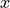
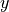

predictors
base
Fixed and learning predictors for supervised learning applications.
- class stats_learn.predictors.base.Base(loss_func, space=None, proc_funcs=(), name=None)
Bases:
abc.ABCBase class for supervised learning predictors.
- Parameters
loss_func (callable) –
space (dict, optional) – The domain for
 and
and  . Defaults to the model’s space.
. Defaults to the model’s space.proc_funcs (Collection of callable of dict of Collection of callable) – Sequentially-invoked preprocessing functions for  and  values.
name (str, optional) –
- data_assess(d_train=None, d_test=None, params=None, x=None, verbose=False, plot_fit=False, log_path=None, img_path=None, ax=None)
Assess predictor using a single dataset.
- Parameters
d_train (array_like, optional) – Training data.
d_test (array_like, optional) – Testing data.
params (dict, optional) – Predictor parameters to evaluate. Outer product of each parameter array is assessed.
x (array_like, optional) – Values of observed element to use for assessment of prediction statistics.
verbose (bool, optional) – Enables iteration print-out.
plot_fit (bool, optional) – Enables plotting of fit predictors.
log_path (os.PathLike or str, optional) – File for saving printed loss table and image path in Markdown format.
img_path (os.PathLike or str, optional) – Directory for saving generated images.
ax (matplotlib.axes.Axes, optional) – Axes onto which stats/losses are plotted.
- Returns
Empirical risk values for each parameterization.
- Return type
list of ndarray
- property dtype
- evaluate(d)
Evaluate predictor using test data.
- Parameters
d (np.ndarray) – The test data.
- Returns
Empirical risk (i.e. average test loss).
- Return type
float
- evaluate_from_model(model, n_test=1, n_mc=1, rng=None)
Evaluate predictor using test data randomly drawn from a given data model.
- Parameters
model (stats_learn.random.models.Base) – Model for training data generation.
n_test (int, optional) – Number of test samples.
n_mc (int, optional) – Number of Monte Carlo simulation iterations.
rng (int or np.random.RandomState or np.random.Generator, optional) – Random number generator seed or object.
- Returns
Empirical risk (i.e. average test loss).
- Return type
float
- fit(d=None, warm_start=False)
Refine the learning model using observations.
- Parameters
d (np.ndarray, optional) – The training data.
warm_start (bool, optional) – If False, reset is invoked to restore unfit state.
- fit_from_model(model, n_train=0, warm_start=False, rng=None)
Refine the learning model using data randomly drawn from a model.
- Parameters
model (stats_learn.random.models.Base) – Model for training data generation.
n_train (int, optional) – Number of training samples.
warm_start (bool, optional) – If False, reset is invoked to restore unfit state.
rng (int or np.random.RandomState or np.random.Generator, optional) – Random number generator seed or object.
- model_assess(model=None, params=None, n_train=0, n_test=0, n_mc=1, x=None, stats=None, verbose=False, plot_stats=False, plot_loss=False, print_loss=False, log_path=None, img_path=None, ax=None, rng=None)
Assess predictor using Monte Carlo simulation of prediction statistics and empirical risk.
- Parameters
model (stats_learn.random.models.Base or stats_learn.bayes.models.Base) – Data-generating model.
params (Collection of dict, optional) – Predictor parameters to evaluate. Outer product of each parameter array is assessed.
n_train (int or Collection of int, optional) – Training data volume.
n_test (int, optional) – Test data volume.
n_mc (int, optional) – Number of Monte Carlo simulation iterations.
x (array_like, optional) – Values of observed element to use for assessment of prediction statistics.
stats (Collection of str, optional) – Names of the statistics to generate, e.g. ‘mean’, ‘std’, ‘cov’, ‘mode’, etc.
verbose (bool, optional) – Enables iteration print-out.
plot_stats (bool, optional) – Enables plotting of prediction statistics.
plot_loss (bool, optional) – Enables plotting of average loss.
print_loss (bool, optional) – Enables print-out of average loss table.
log_path (os.PathLike or str, optional) – File for saving printed loss table and image path in Markdown format.
img_path (os.PathLike or str, optional) – Directory for saving generated images.
ax (matplotlib.axes.Axes, optional) – Axes onto which stats/losses are plotted.
rng (int or np.random.RandomState or np.random.Generator, optional) – Random number generator seed or object.
- Returns
ndarray – Prediction statistics for each parameterization.
ndarray – Empirical risk values for each parameterization.
- property ndim
- plot_predict(x=None, ax=None, label=None)
Plot prediction function.
- Parameters
x (array_like, optional) – Values to plot against. Defaults to self.x_plt.
ax (matplotlib.axes.Axes, optional) – Axes.
label (str, optional) – Label for matplotlib.artist.Artist
- Return type
matplotlib.artist.Artist or tuple of matplotlib.artist.Artist
- plot_predict_stats(model=None, params=None, n_train=0, n_mc=1, x=None, do_std=False, verbose=False, ax=None)
- plot_risk_eval_sim(model=None, params=None, n_train=0, n_test=1, n_mc=1, verbose=False, ax=None)
- predict(x)
Generate predictions for given values.
- Parameters
x (array_like) – Observed random element values.
- Returns
Prediction values.
- Return type
np.ndarray
- predict_stats(model=None, params=None, n_train=0, n_mc=1, x=None, stats=('mode',), verbose=False)
- abstract reset()
Restore unfit prior state.
- risk_eval_analytic(model=None, params=None, n_train=0, n_test=1, verbose=False)
- risk_eval_sim(model=None, params=None, n_train=0, n_test=1, n_mc=1, verbose=False)
- set_params(**kwargs)
Set parameters of the learning model object.
- property shape
- property size
- property space
The domain for
and . Defaults to the model’s space.
- tex_params(key, value=None)
- class stats_learn.predictors.base.Bayes(bayes_model, loss_func, space=None, proc_funcs=(), name=None)
Bases:
stats_learn.predictors.base.BasePredictor based on Bayesian data model.
- Parameters
bayes_model (stats_learn.bayes.models.Base) – Bayes model used for fitting and to generate predictions.
loss_func (callable) –
space (dict, optional) – The domain for
and . Defaults to the model’s space.proc_funcs (Collection of callable of dict of Collection of callable) – Sequentially-invoked preprocessing functions for and values.
name (str, optional) –
- reset()
Invoke reset of the Bayesian model.
- class stats_learn.predictors.base.BayesClassifier(bayes_model, space=None, proc_funcs=(), name=None)
Bases:
stats_learn.predictors.base.ClassifierMixin,stats_learn.predictors.base.BayesClassifier based on Bayesian data model.
- Parameters
bayes_model (stats_learn.bayes.models.Base) – Bayes model used for fitting and to generate predictions.
space (dict, optional) – The domain for
and . Defaults to the model’s space.proc_funcs (Collection of callable of dict of Collection of callable) – Sequentially-invoked preprocessing functions for and values.
name (str, optional) –
- class stats_learn.predictors.base.BayesRegressor(bayes_model, space=None, proc_funcs=(), name=None)
Bases:
stats_learn.predictors.base.RegressorMixin,stats_learn.predictors.base.BayesRegressor based on Bayesian data model.
- Parameters
bayes_model (stats_learn.bayes.models.Base) – Bayes model used for fitting and to generate predictions.
space (dict, optional) – The domain for
and . Defaults to the model’s space.proc_funcs (Collection of callable of dict of Collection of callable) – Sequentially-invoked preprocessing functions for and values.
name (str, optional) –
- evaluate_analytic(model=None, n_train=0, n_test=1)
Analytically calculate risk.
- Parameters
model (stats_learn.random.models.Base) – Model for training data generation.
n_train (int, optional) – Number of training samples.
n_test (int, optional) – Number of testing samples.
- Returns
Analytical risk.
- Return type
float
- class stats_learn.predictors.base.ClassifierMixin
Bases:
objectUses model conditional mode to minimize 0-1 loss.
- class stats_learn.predictors.base.Model(model, loss_func, space=None, proc_funcs=(), name=None)
Bases:
stats_learn.predictors.base.BasePredictor based on fixed data model.
- Parameters
model (stats_learn.random.models.Base) – Fixed model used to generate predictions.
loss_func (callable) –
space (dict, optional) – The domain for
and . Defaults to the model’s space.proc_funcs (Collection of callable of dict of Collection of callable) – Sequentially-invoked preprocessing functions for and values.
name (str, optional) –
- fit_from_model(model, n_train=0, warm_start=False, rng=None)
Refine the learning model using data randomly drawn from a model.
- Parameters
model (stats_learn.random.models.Base) – Model for training data generation.
n_train (int, optional) – Number of training samples.
warm_start (bool, optional) – If False, reset is invoked to restore unfit state.
rng (int or np.random.RandomState or np.random.Generator, optional) – Random number generator seed or object.
- reset()
Restore unfit prior state.
- class stats_learn.predictors.base.ModelClassifier(model, space=None, proc_funcs=(), name=None)
Bases:
stats_learn.predictors.base.ClassifierMixin,stats_learn.predictors.base.ModelClassifier based on fixed data model.
- Parameters
model (stats_learn.random.models.Base) – Fixed model used to generate predictions.
space (dict, optional) – The domain for
and . Defaults to the model’s space.proc_funcs (Collection of callable of dict of Collection of callable) – Sequentially-invoked preprocessing functions for and values.
name (str, optional) –
- class stats_learn.predictors.base.ModelRegressor(model, space=None, proc_funcs=(), name=None)
Bases:
stats_learn.predictors.base.RegressorMixin,stats_learn.predictors.base.ModelRegressor based on fixed data model.
- Parameters
model (stats_learn.random.models.Base) – Fixed model used to generate predictions.
space (dict, optional) – The domain for
and . Defaults to the model’s space.proc_funcs (Collection of callable of dict of Collection of callable) – Sequentially-invoked preprocessing functions for and values.
name (str, optional) –
- evaluate_analytic(model=None, n_train=0, n_test=1)
Analytically calculate risk.
- Parameters
model (stats_learn.random.models.Base) – Model for training data generation.
n_train (int, optional) – Number of training samples.
n_test (int, optional) – Number of testing samples.
- Returns
Analytical risk.
- Return type
float
- class stats_learn.predictors.base.RegressorMixin
Bases:
objectUses model conditional mean to minimize squared-error loss.
torch
Learning predictors using PyTorch networks.
- class stats_learn.predictors.torch.LitMLP(layer_sizes, activation=<class 'torch.nn.modules.activation.ReLU'>, loss_func=<function mse_loss>, optim_cls=<class 'torch.optim.adam.Adam'>, optim_params=None)
Bases:
pytorch_lightning.core.lightning.LightningModulePyTorch-Lightning sequential MLP.
- Parameters
layer_sizes (Collection of int) – Hidden layer sizes.
activation (nn.Module, optional) – The activation function.
loss_func (callable, optional) – The loss function for network training.
optim_cls (class, optional) – The optimizer class.
optim_params (dict, optional) – Keyword arguments for optimizer instantiation.
- configure_optimizers()
Choose what optimizers and learning-rate schedulers to use in your optimization. Normally you’d need one. But in the case of GANs or similar you might have multiple.
- Returns
Any of these 6 options.
Single optimizer.
List or Tuple of optimizers.
Two lists - The first list has multiple optimizers, and the second has multiple LR schedulers (or multiple
lr_scheduler_config).Dictionary, with an
"optimizer"key, and (optionally) a"lr_scheduler"key whose value is a single LR scheduler orlr_scheduler_config.Tuple of dictionaries as described above, with an optional
"frequency"key.None - Fit will run without any optimizer.
The
lr_scheduler_configis a dictionary which contains the scheduler and its associated configuration. The default configuration is shown below.lr_scheduler_config = { # REQUIRED: The scheduler instance "scheduler": lr_scheduler, # The unit of the scheduler's step size, could also be 'step'. # 'epoch' updates the scheduler on epoch end whereas 'step' # updates it after a optimizer update. "interval": "epoch", # How many epochs/steps should pass between calls to # `scheduler.step()`. 1 corresponds to updating the learning # rate after every epoch/step. "frequency": 1, # Metric to to monitor for schedulers like `ReduceLROnPlateau` "monitor": "val_loss", # If set to `True`, will enforce that the value specified 'monitor' # is available when the scheduler is updated, thus stopping # training if not found. If set to `False`, it will only produce a warning "strict": True, # If using the `LearningRateMonitor` callback to monitor the # learning rate progress, this keyword can be used to specify # a custom logged name "name": None, }
When there are schedulers in which the
.step()method is conditioned on a value, such as thetorch.optim.lr_scheduler.ReduceLROnPlateauscheduler, Lightning requires that thelr_scheduler_configcontains the keyword"monitor"set to the metric name that the scheduler should be conditioned on.Metrics can be made available to monitor by simply logging it using
self.log('metric_to_track', metric_val)in yourLightningModule.Note
The
frequencyvalue specified in a dict along with theoptimizerkey is an int corresponding to the number of sequential batches optimized with the specific optimizer. It should be given to none or to all of the optimizers. There is a difference between passing multiple optimizers in a list, and passing multiple optimizers in dictionaries with a frequency of 1:In the former case, all optimizers will operate on the given batch in each optimization step.
In the latter, only one optimizer will operate on the given batch at every step.
This is different from the
frequencyvalue specified in thelr_scheduler_configmentioned above.def configure_optimizers(self): optimizer_one = torch.optim.SGD(self.model.parameters(), lr=0.01) optimizer_two = torch.optim.SGD(self.model.parameters(), lr=0.01) return [ {"optimizer": optimizer_one, "frequency": 5}, {"optimizer": optimizer_two, "frequency": 10}, ]
In this example, the first optimizer will be used for the first 5 steps, the second optimizer for the next 10 steps and that cycle will continue. If an LR scheduler is specified for an optimizer using the
lr_schedulerkey in the above dict, the scheduler will only be updated when its optimizer is being used.Examples:
# most cases. no learning rate scheduler def configure_optimizers(self): return Adam(self.parameters(), lr=1e-3) # multiple optimizer case (e.g.: GAN) def configure_optimizers(self): gen_opt = Adam(self.model_gen.parameters(), lr=0.01) dis_opt = Adam(self.model_dis.parameters(), lr=0.02) return gen_opt, dis_opt # example with learning rate schedulers def configure_optimizers(self): gen_opt = Adam(self.model_gen.parameters(), lr=0.01) dis_opt = Adam(self.model_dis.parameters(), lr=0.02) dis_sch = CosineAnnealing(dis_opt, T_max=10) return [gen_opt, dis_opt], [dis_sch] # example with step-based learning rate schedulers # each optimizer has its own scheduler def configure_optimizers(self): gen_opt = Adam(self.model_gen.parameters(), lr=0.01) dis_opt = Adam(self.model_dis.parameters(), lr=0.02) gen_sch = { 'scheduler': ExponentialLR(gen_opt, 0.99), 'interval': 'step' # called after each training step } dis_sch = CosineAnnealing(dis_opt, T_max=10) # called every epoch return [gen_opt, dis_opt], [gen_sch, dis_sch] # example with optimizer frequencies # see training procedure in `Improved Training of Wasserstein GANs`, Algorithm 1 # https://arxiv.org/abs/1704.00028 def configure_optimizers(self): gen_opt = Adam(self.model_gen.parameters(), lr=0.01) dis_opt = Adam(self.model_dis.parameters(), lr=0.02) n_critic = 5 return ( {'optimizer': dis_opt, 'frequency': n_critic}, {'optimizer': gen_opt, 'frequency': 1} )
Note
Some things to know:
Lightning calls
.backward()and.step()on each optimizer and learning rate scheduler as needed.If you use 16-bit precision (
precision=16), Lightning will automatically handle the optimizers.If you use multiple optimizers,
training_step()will have an additionaloptimizer_idxparameter.If you use
torch.optim.LBFGS, Lightning handles the closure function automatically for you.If you use multiple optimizers, gradients will be calculated only for the parameters of current optimizer at each training step.
If you need to control how often those optimizers step or override the default
.step()schedule, override theoptimizer_step()hook.
- forward(x)
Same as
torch.nn.Module.forward().- Parameters
*args – Whatever you decide to pass into the forward method.
**kwargs – Keyword arguments are also possible.
- Returns
Your model’s output
- training: bool
- training_step(batch, batch_idx)
Here you compute and return the training loss and some additional metrics for e.g. the progress bar or logger.
- Parameters
batch (
Tensor| (Tensor, …) | [Tensor, …]) – The output of yourDataLoader. A tensor, tuple or list.batch_idx (
int) – Integer displaying index of this batchoptimizer_idx (
int) – When using multiple optimizers, this argument will also be present.hiddens (
Any) – Passed in if :paramref:`~pytorch_lightning.core.lightning.LightningModule.truncated_bptt_steps` > 0.
- Returns
Any of.
Tensor- The loss tensordict- A dictionary. Can include any keys, but must include the key'loss'None- Training will skip to the next batch. This is only for automatic optimization.This is not supported for multi-GPU, TPU, IPU, or DeepSpeed.
In this step you’d normally do the forward pass and calculate the loss for a batch. You can also do fancier things like multiple forward passes or something model specific.
Example:
def training_step(self, batch, batch_idx): x, y, z = batch out = self.encoder(x) loss = self.loss(out, x) return loss
If you define multiple optimizers, this step will be called with an additional
optimizer_idxparameter.# Multiple optimizers (e.g.: GANs) def training_step(self, batch, batch_idx, optimizer_idx): if optimizer_idx == 0: # do training_step with encoder ... if optimizer_idx == 1: # do training_step with decoder ...
If you add truncated back propagation through time you will also get an additional argument with the hidden states of the previous step.
# Truncated back-propagation through time def training_step(self, batch, batch_idx, hiddens): # hiddens are the hidden states from the previous truncated backprop step out, hiddens = self.lstm(data, hiddens) loss = ... return {"loss": loss, "hiddens": hiddens}
Note
The loss value shown in the progress bar is smoothed (averaged) over the last values, so it differs from the actual loss returned in train/validation step.
- class stats_learn.predictors.torch.LitPredictor(model, space, trainer_params=None, dl_kwargs=None, reset_func=None, proc_funcs=(), name=None)
Bases:
stats_learn.predictors.base.BaseRegressor using PyTorch module.
- Parameters
model (pl.LightningModule) – The PyTorch-Lightning module used for prediction.
space (dict, optional) – The domain for
and . Defaults to the model’s space.trainer_params (dict, optional) – Keyword arguments for pl.Trainer instantiation.
dl_kwargs (dict, optional) – Keyword arguments for DataLoader instantiation.
reset_func (callable, optional) – Function that calls model and resets to unfit state.
proc_funcs (Collection of callable of dict of Collection of callable) – Sequentially-invoked preprocessing functions for and values.
name (str, optional) –
- reset()
Restore unfit prior state.
- set_params(**kwargs)
Set parameters of the learning model object.
- stats_learn.predictors.torch.build_mlp(layer_sizes, activation=<class 'torch.nn.modules.activation.ReLU'>, last_act=False)
PyTorch sequential MLP.
- Parameters
layer_sizes (Collection of int) – Hidden layer sizes.
activation (nn.Module, optional) – The activation function.
last_act (bool, optional) – Include final activation function.
- Return type
nn.Sequential
- stats_learn.predictors.torch.reset_weights(model)
Reset weights of PyTorch module.